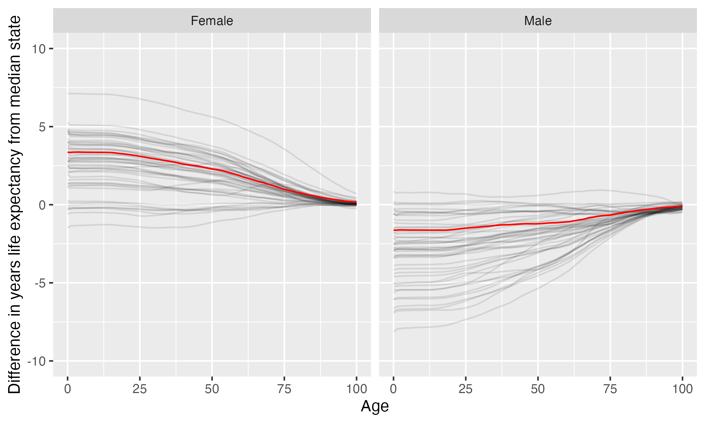

Emory & Henry College
Emory & Henry College is located in Emory, Virginia. It is a private not-for-profit, 4-year or above institution.
From Wikipedia: Emory may refer to:
.
Overview of institution
Institution kind: Master’s Colleges & Universities: Medium Programs
Undergrad program: Balanced arts & sciences/professions, some graduate coexistence
Graduate program: Postbaccalaureate: Other-dominant, with other professional programs
Enrollment profile: High undergraduate (see more details below)
Average net price for undergrads on financial aid: $19,797 (1.4 times the equivalent cost of Harvard).
Average net price for families with $30K-48K income: $11,842 (This is $10,446 more expensive than what Harvard costs for equivalent students).
Actual price for your family: Go here to see what your family may be asked to pay. It can be MUCH lower than the average price but also higher for some.
Size and setting: Four-year, small, highly residential
In state percentage: 52.3% of first year students come from Virginia
In US percentage: 100.0% of first year students come from the US (note that 0.0% have no residence reported)
Graduation rate (within 6 years) for students seeking a Bachelors: 50.7% (this is what is usually reported as “graduation rate”)
Graduation rate (within 4 years) for students seeking a Bachelors: 41.1%
Percent of students seeking a Bachelors who transfer out of this institution: 35.9%
Student to tenure-stream faculty ratio: 15.9 (undergrads to tenure-stream faculty) [Tenure explained]
Student to faculty ratio: 9.8 (undergrads to all faculty)
Degrees offered: Bachelor’s degree, Master’s degree, Doctor’s degree: professional practice
Schedule: Semester
Institution provides on campus housing: Yes
Dorm capacity: There are enough dorm beds for 933 students
Freshmen required to live on campus: No
Meal plan: Yes, number of meals in the maximum meal plan offered
Covid vaccination requirement for students: This institution was never reported as requiring covid vaccination for students (based on info from here)
Covid vaccination requirement for faculty/staff: This institution was never reported as requiring covid vaccination for faculty and/or staff (based on info from here)
Advanced placement (AP) credits used: Yes
Disabilities: 9 percent of undergrads are registered as having disabilities.
Overview of location
- Abortion in this state: Some restrictions/protections (based on https://states.guttmacher.org/policies/ as of May 10, 2023)
- Gun law stringency: B (higher grade = more stringent)
- State rep support for contraception: 63.6% of US reps from this state voted in favor of legal protections for contraception.
- State rep support for recognizing same-sex and interracial marriage: 63.6% of US reps from this state voted in favor of requiring states to recognize same-sex and interracial marriages performed in other states
- Anti-trans legislative risk: High risk (based on Erin Reed’s work, as of May 19, 2023)
- Ecological region: Appalachian-Blue Ridge forests
- Biome: Temperate Broadleaf & Mixed Forests
- Distance to mountains: 5.6 miles to Appalachian Mountains
- Climate: See overview at WeatherSpark
Similar institutions
This is using information about school size, acceptance rate, yield rate, graduation rate, cost, athletic conference, and similar metrics, but it can miss important axes of similarity (for example, culinary versus hair styling schools).
Map
Enrollment
| Emory & Henry College | Change over ≤ 11 years | Trend | South Atlantic Conference | Master’s Colleges & Universities: Medium Programs | |
|---|---|---|---|---|---|
| Undergrads (full time) | 1,048 (2021) |

|
|||
| Undergrads (part time) | 36 (2021) |

|
|||
| Grad students (full time) | 286 (2021) |

|
↑ 34 per year |
||
| Grad students (part time) | 2 (2021) |

|
|||
| Admission rate (undergrads) | 87% (2021) |

|
|||
| Yield rate (percent of applicants offered undergraduate admission who accept) | 20% (2021) |

|
✪✪ Better (higher) than 31% |
✪✪✪ Better (higher) than 41% |
|
| Graduation rate (bachelors in 6 years) | 51% (2021) |

|
✪✪✪ Better (higher) than 46% |
✪✪✪ Better (higher) than 44% |
|
| Transfer out rate (bachelors) | 36% (2021) |

|
✪ Better (lower) than 20% |
✪ Better (lower) than 15% |
Student financing
At many universities, almost no students pay the listed tuition and fees (“sticker price”): instead, their financial aid package lowers this dramatically, but how much students pay can vary substantially based on family income and other factors. The tuition below is the average across many students receiving aid: your family may be asked to pay less or more than this.
| Emory & Henry College | Change over ≤ 11 years | South Atlantic Conference | Master’s Colleges & Universities: Medium Programs | |
|---|---|---|---|---|
| Average net price (for students awarded aid) | $19,797 (2020) |

|
✪✪ Better (lower) than 38% |
✪✪✪ Better (lower) than 48% |
| Undergrads getting federal aid | 52% (2021) |

|
✪✪✪✪ Better (higher) than 62% |
✪✪✪ Better (higher) than 47% |
| Undergrads getting any aid | 100% (2021) |

|
✪✪✪✪✪ Better (higher) than 100% |
✪✪✪✪✪ Better (higher) than 100% |
| Undergrads getting Pell grants | 52% (2021) |

|
✪✪✪✪✪ Better (higher) than 85% |
✪✪✪✪ Better (higher) than 74% |
Teaching
| Emory & Henry College | Change over ≤ 11 years | Trend | South Atlantic Conference | Master’s Colleges & Universities: Medium Programs | |
|---|---|---|---|---|---|
| Undergrads per tenure track instructor (lower is better) | 16 (2020) |

|
✪✪✪✪ Better (lower) than 78% |
✪✪✪✪✪ Better (lower) than 83% |
|
| Undergrads per instructor (lower is better) | 9.8 (2020) |

|
↓ -0.4 per year |
✪✪✪✪✪ Better (lower) than 100% |
✪✪✪✪✪ Better (lower) than 94% |
| Total instructors | 92 (2020) |

|
↑ 3.5 per year |
||
| Tenure track instructors | 57 (2020) |

|
|||
| Non-tenure track instructors | 35 (2020) |

|
↑ 2.7 per year |
Student details
| Emory & Henry College | Change over ≤ 11 years | Trend | |
|---|---|---|---|
| Dorm capacity | 933 (2021) |

|
↑ 11 per year |
| Percent of undergrads with registered disabilities (≤3 is rounded up to 3) | 9% (2021) |

|
Institution finances
| Emory & Henry College | Change over ≤ 11 years | Trend | South Atlantic Conference | Master’s Colleges & Universities: Medium Programs | |
|---|---|---|---|---|---|
| Revenue from tution and fees | 29% (2021) |

|
✪✪✪✪ Better (lower) than 77% |
✪✪✪✪ Better (lower) than 75% |
|
| Revenue minus expenses | $25 M (2021) |

|
✪✪✪ Better (higher) than 46% |
✪✪✪✪✪ Better (higher) than 84% |
|
| Revenue | $65 M (2021) |

|
|||
| Expenses | $40 M (2021) |

|
↑ $1.9 M per year |
||
| Assets | $275 M (2021) |

|
↑ $10 M per year |
✪✪✪✪ Better (higher) than 69% |
✪✪✪✪✪ Better (higher) than 81% |
Graduation rates
Graduation rates for bachelor’s degrees within 150% of normal time (6 years for a 4-year degree). Note that this uses US federal demographic data: it only has two genders and a specified set of ethnicities and races. For groups with small numbers, the graduation rate may be highly variable year to year (do all three people in this group graduate this year or just two of three, for example).
| Emory & Henry College | Change over ≤ 11 years | South Atlantic Conference | Master’s Colleges & Universities: Medium Programs | |
|---|---|---|---|---|
| Total | 51% (2021) |

|
✪✪✪ Better (higher) than 46% |
✪✪✪ Better (higher) than 44% |
| Men | 44% (2021) |

|
✪✪✪ Better (higher) than 46% |
✪✪✪ Better (higher) than 42% |
| Women | 58% (2021) |

|
✪✪✪ Better (higher) than 46% |
✪✪✪ Better (higher) than 53% |
| American Indian or Alaska Native men | 0% (2021) |

|
✪✪✪ Better (higher) than 43% |
✪✪✪ Better (higher) than 50% |
| American Indian or Alaska Native women | 0% (2021) |

|
✪✪ Better (higher) than 33% |
✪✪ Better (higher) than 32% |
| Asian men | 100% (2021) |

|
✪✪✪✪✪ Better (higher) than 100% |
✪✪✪✪✪ Better (higher) than 100% |
| Asian women | 100% (2021) |

|
✪✪✪✪✪ Better (higher) than 100% |
✪✪✪✪✪ Better (higher) than 100% |
| Black or African American men | 27% (2021) |

|
✪✪ Better (higher) than 38% |
✪✪ Better (higher) than 35% |
| Black or African American women | 40% (2021) |

|
✪✪ Better (higher) than 38% |
✪✪ Better (higher) than 38% |
| Hispanic men | 50% (2021) |

|
✪✪✪✪✪ Better (higher) than 83% |
✪✪✪✪ Better (higher) than 67% |
| Hispanic women | 30% (2021) |

|
✪ Better (higher) than 15% |
✪ Better (higher) than 19% |
| Native Hawaiian or other Pacific Islander women | 100% (2020) |

|
✪✪✪✪✪ Better (higher) than 100% |
✪✪✪✪✪ Better (higher) than 100% |
| White men | 52% (2021) |

|
✪✪✪ Better (higher) than 46% |
✪✪✪ Better (higher) than 45% |
| White women | 63% (2021) |

|
✪✪✪✪ Better (higher) than 62% |
✪✪✪ Better (higher) than 49% |
| Two or more races men | 33% (2021) |

|
✪✪ Better (higher) than 36% |
✪✪✪ Better (higher) than 41% |
| Two or more races women | 50% (2021) |

|
✪✪✪✪ Better (higher) than 67% |
✪✪✪ Better (higher) than 57% |
| Nonresident alien men | 50% (2021) |

|
✪✪✪ Better (higher) than 42% |
✪✪✪ Better (higher) than 56% |
| Nonresident alien women | 0% (2020) |

|
✪ Better (higher) than 9% |
✪ Better (higher) than 16% |
Freshmen demographics
Demographic data for first time degree-seeking students. Note that this uses US federal demographic data: it only has two genders and a specified set of ethnicities and races.
| Emory & Henry College | Change over ≤ 11 years | |
|---|---|---|
| Men (percent freshmen) | 54% (2021) |

|
| Women (percent freshmen) | 46% (2021) |

|
| American Indian or Alaska Native men (percent freshmen) | 0.3% (2021) |

|
| American Indian or Alaska Native women (percent freshmen) | 0% (2021) |

|
| Asian men (percent freshmen) | 0.5% (2021) |

|
| Asian women (percent freshmen) | 0.3% (2021) |

|
| Black or African American men (percent freshmen) | 17% (2021) |

|
| Black or African American women (percent freshmen) | 4.1% (2021) |

|
| Hispanic men (percent freshmen) | 4.4% (2021) |

|
| Hispanic women (percent freshmen) | 2.3% (2021) |

|
| Native Hawaiian or Other Pacific Islander men (percent freshmen) | 0% (2021) |

|
| Native Hawaiian or Other Pacific Islander women (percent freshmen) | 0% (2021) |

|
| White men (percent freshmen) | 24% (2021) |

|
| White women (percent freshmen) | 36% (2021) |

|
| Two or more races men (percent freshmen) | 4.4% (2021) |

|
| Two or more races women (percent freshmen) | 1.5% (2021) |

|
| Race ethnicity unknown men (percent freshmen) | 1.5% (2021) |

|
| Race ethnicity unknown women (percent freshmen) | 1.5% (2021) |

|
| Nonresident alien men (percent freshmen) | 2.1% (2021) |

|
| Nonresident alien women (percent freshmen) | 0.8% (2021) |

|
Freshmen geography
| Emory & Henry College | Change over ≤ 11 years | |
|---|---|---|
| In state | 52% (2021) |

|
| US | 100% (2021) |

|
| Not reported | 0% (2021) |

|
Tenure track faculty
Tenure track faculty are those who are eligible for tenure. This includes both pre-tenure and tenured faculty. Once faculty get tenure, they are (generally) protected from being fired for intellectual reasons, helping to ensure their freedom in teaching and research. They can still lose their positions for misconduct, financial problems, not fulfilling their duties, or other reasons. Note that this chart uses US federal demographic data: it only has two genders and a specified set of ethnicities and races.
| Emory & Henry College | Change over ≤ 11 years | Trend | |
|---|---|---|---|
| Total (tenure-track count) | 57 (2020) |

|
|
| Women (tenure-track count) | 30 (2020) |

|
↑ 1.3 per year |
| Men (tenure-track count) | 27 (2020) |

|
|
| American Indian or Alaska Native (tenure-track count) | 0 (2020) |

|
|
| Asian (tenure-track count) | 2 (2020) |

|
↓ -0.3 per year |
| Black or African American (tenure-track count) | 0 (2020) |

|
↓ -0.1 per year |
| Hispanic or Latino (tenure-track count) | 1 (2020) |

|
|
| Native Hawaiian or other Pacific Islander (tenure-track count) | 0 (2020) |

|
|
| White (tenure-track count) | 51 (2020) |

|
|
| Two or more races (tenure-track count) | 1 (2020) |

|
↑ 0.2 per year |
| Nonresident alien (tenure-track count) | 0 (2020) |

|
Non-tenure track faculty
Non-tenure track faculty are not eligible for tenure. Some are hired one semester at a time, some have multi-year contracts. They typically have a higher teaching load than tenure track faculty, leaving less time for research or other creative endeavors. They are also easier to fire than tenured faculty. Sometimes they are external experts (a noted musician, a former senator) who are hired to teach some classes without the expected permanence of a tenure-track position. Note that this chart uses US federal demographic data: it only has two genders and a specified set of ethnicities and races.
| Emory & Henry College | Change over ≤ 11 years | Trend | |
|---|---|---|---|
| Total (non-tenure-track count) | 35 (2020) |

|
↑ 2.7 per year |
| Women (non-tenure-track count) | 24 (2020) |

|
↑ 2.2 per year |
| Men (non-tenure-track count) | 11 (2020) |

|
↑ 0.6 per year |
| American Indian or Alaska Native (non-tenure-track count) | 0 (2020) |

|
|
| Asian (non-tenure-track count) | 0 (2020) |

|
|
| Black or African American (non-tenure-track count) | 0 (2020) |

|
|
| Hispanic or Latino (non-tenure-track count) | 0 (2020) |

|
|
| Native Hawaiian or other Pacific Islander (non-tenure-track count) | 0 (2020) |

|
|
| White (non-tenure-track count) | 33 (2020) |

|
↑ 2.5 per year |
| Two or more races (non-tenure-track count) | 0 (2020) |

|
|
| Nonresident alien (non-tenure-track count) | 0 (2020) |

|
Library facilities
| Emory & Henry College | Change over ≤ 11 years | Trend | South Atlantic Conference | Master’s Colleges & Universities: Medium Programs | |
|---|---|---|---|---|---|
| Number of physical books | 164,206 (2021) |

|
↓ -9,201 per year |
✪✪✪✪✪ Better (higher) than 92% |
✪✪✪✪ Better (higher) than 71% |
| Physical library circulations per students and faculty | 2.8 (2020) |

|
↓ -0.9 per year |
✪✪✪✪✪ Better (higher) than 86% |
✪✪✪✪ Better (higher) than 74% |
| Digital library circulations per students and faculty | 49 (2020) |

|
✪✪✪✪✪ Better (higher) than 86% |
✪✪✪✪✪ Better (higher) than 83% |
Life expectancy
This hopefully will not be relevant for potential students, but it may be for people moving to an area longer term, such as faculty and staff choosing where to live. This uses information from US National Vital Statistics Reports for 2020; like much federal data, it assumes people are male or female. For age difference from median, it is from the median state, averaging across all genders (one consequence of this is that the difference from the median life expectancy is almost always negative for men).
- Life expectancy at birth: 80.1 years women (3.4 years over the median), 75.1 years men (1.6 years below the median)
- Remaining life expectancy at age 18: 62.7 years women (3.3 years over the median), 57.8 years men (1.6 years below the median)
- Remaining life expectancy at age 30: 51.1 years women (2.9 years over the median), 46.7 years men (1.4 years below the median)
- Remaining life expectancy at age 45: 37 years women (2.5 years over the median), 33.3 years men (1.2 years below the median)
- Remaining life expectancy at age 60: 23.8 years women (1.8 years over the median), 20.9 years men (1.1 years below the median)
We can also plot the extra / fewer years of life expected for this state (red) compared to other states (dark gray) at each age. Again, this is normalized for the median state.

SAT scores
| Emory & Henry College | Change over ≤ 11 years | |
|---|---|---|
| Applicants submitting SAT | 63% (2020) |

|
| SAT Evidence Based Reading and Writing 25th percentile score | 490 (2020) |

|
| SAT Evidence Based Reading and Writing 75th percentile score | 590 (2020) |

|
| SAT Math 25th percentile score | 470 (2020) |

|
| SAT Math 75th percentile score | 560 (2020) |

|
ACT scores
| Emory & Henry College | Change over ≤ 11 years | |
|---|---|---|
| Applicants submitting ACT | 34% (2020) |

|
| ACT Composite 25th percentile score | 18 (2020) |

|
| ACT Composite 75th percentile score | 24 (2020) |

|
| ACT English 25th percentile score | 18 (2020) |

|
| ACT English 75th percentile score | 24 (2020) |

|
| ACT Math 25th percentile score | 17 (2020) |

|
| ACT Math 75th percentile score | 24 (2020) |

|